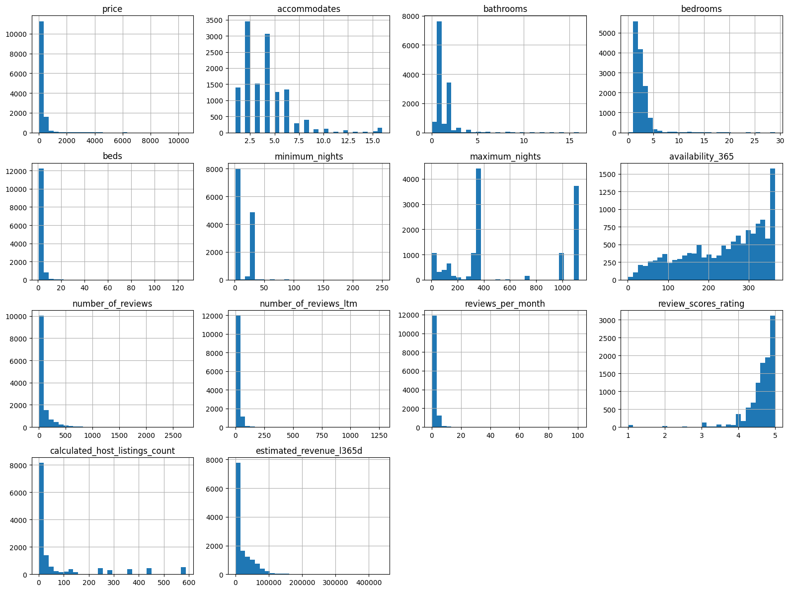
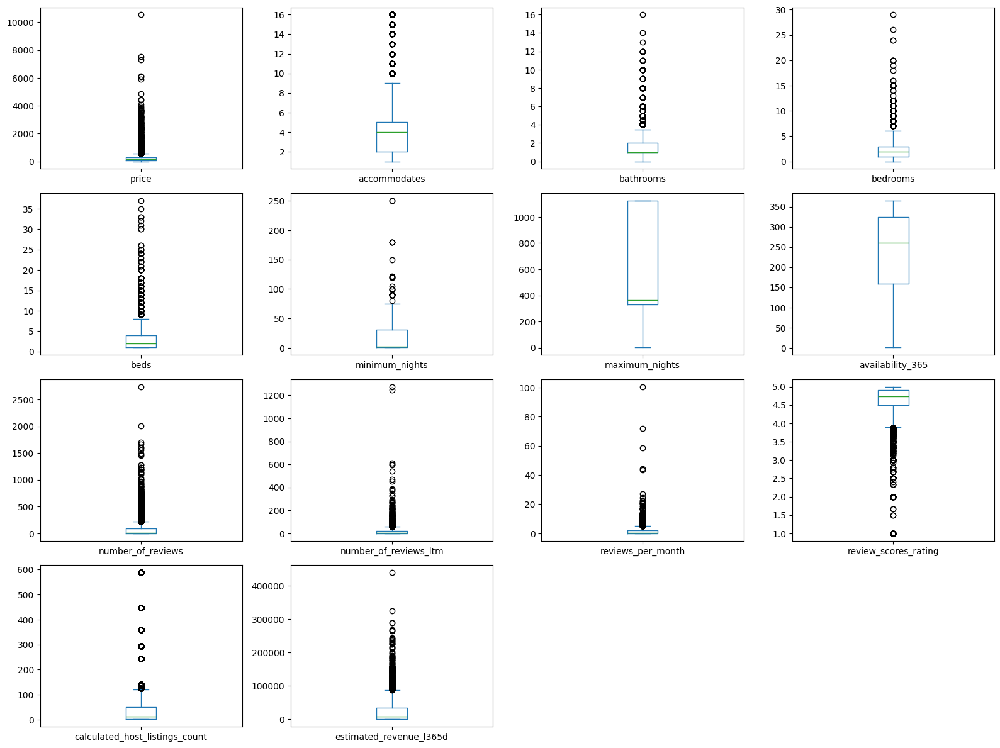
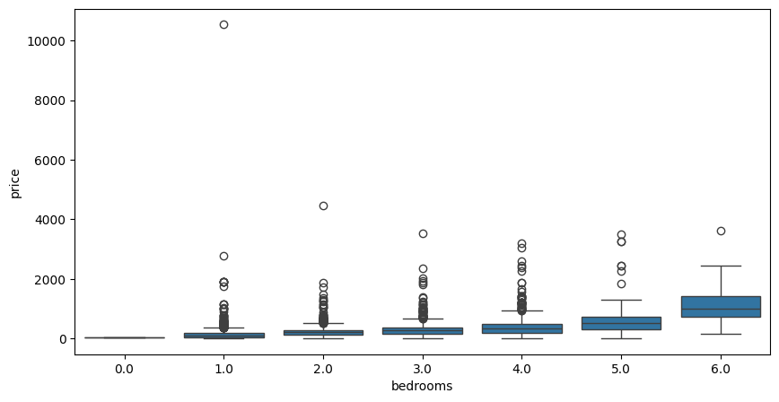
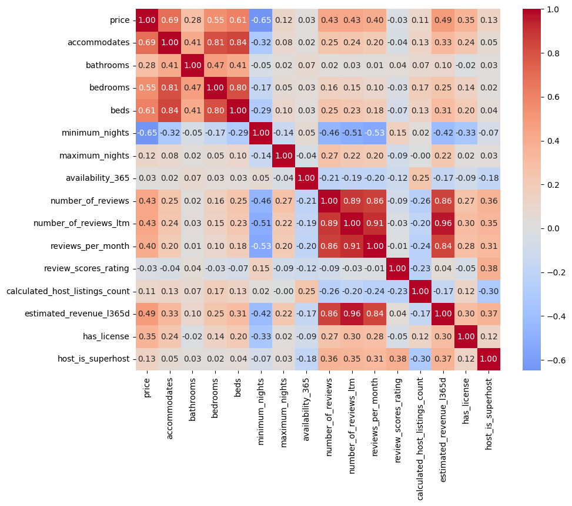
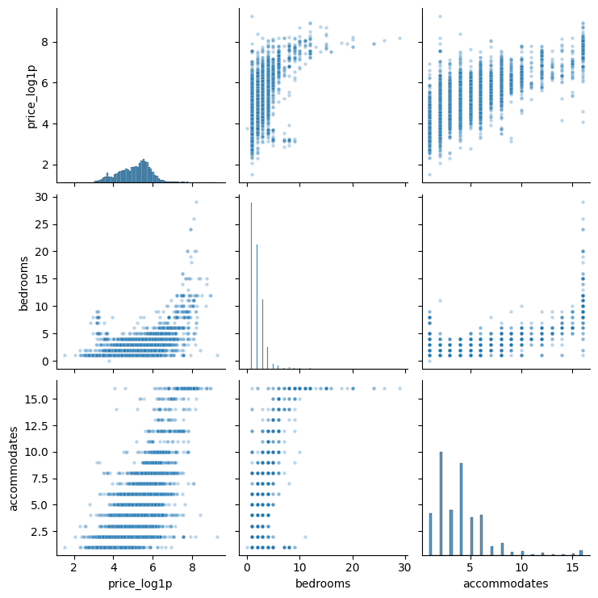
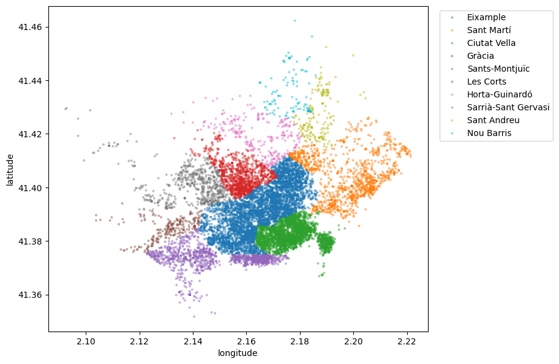
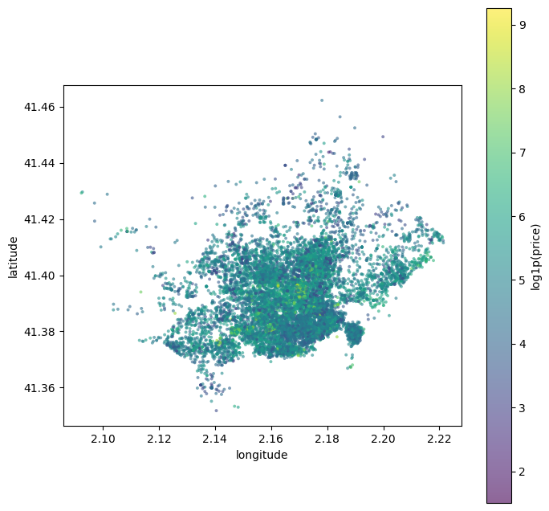

FairNight: un sistema de recomendación de precios para anuncios de Airbnb
Trabajo Fin de Máster, Modalidad Semipresencial
Yago Coll Crespo, Septiembre 2026
Este anexo desarrolla en detalle el análisis exploratorio resumido en la Sección 2 de la memoria: carga y
tipado, tratamiento de nulos y duplicados, análisis univariante y bivariante de cada variable, correlaciones,
geografía y amenities. Todo el recorrido está construido sobre el notebook
01_eda.ipynb de Barcelona, tomada como referencia por ser la ciudad con el proceso más
documentado. Las otras 6 ciudades parten del mismo fichero (listings.csv.gz de Inside Airbnb, 90
columnas) y siguen el mismo criterio, pero cada una tiene su propio recorrido completo, con sus propios
hallazgos y particularidades: la última sección de este anexo (M) recoge, ciudad a ciudad, en qué se aparta
cada una de lo descrito aquí para Barcelona.
El fichero de origen trae 15.293 filas y 90 columnas: 42 float64, 30 object y
18 int64. Dos cosas llaman la atención de inmediato: price llega como texto
("$409.00", con símbolo de moneda y separador de miles) en vez de numérico, y hay columnas
float64 cuyo nombre sugiere texto o fecha (host_since, host_response_time).
Resultan ser parte de un bloque de 12 columnas completamente vacías (100% nulas): neighbourhood,
host_acceptance_rate, host_response_time, host_thumbnail_url,
host_neighbourhood, host_total_listings_count, host_verifications,
host_since, host_response_rate, instant_bookable,
neighborhood_overview, calendar_updated. De las 90 columnas, solo 78 tienen algún
dato real en este snapshot.
También aparece un grupo de cinco columnas no estándar de Inside Airbnb, price_quote_*
(price_quote_total_price, price_quote_price_per_night, fechas de check-in/check-out,
JSON de la cotización): parecen una cotización para unas fechas concretas, no el precio base del anuncio. Su
destino se decide más adelante, al analizar price a fondo (Sección 3.1 de la memoria).
Cuatro ajustes antes de poder trabajar con las columnas: price se limpia de símbolo de moneda y
separador de miles y se convierte a float; last_scraped, first_review,
last_review y calendar_last_scraped pasan de texto a datetime
(host_since se deja fuera, es una de las 12 columnas vacías); los flags de texto
"t"/"f" (host_is_superhost, host_has_profile_pic,
host_identity_verified, has_availability) se mapean a boolean nullable;
y host_profile_id, inferido como float64 por tener 87 nulos, se pasa a
Int64 (entero nullable).
Con 90 columnas hay muchos más nulos que en un dataset resumido. Cada grupo se trata según su causa, no con una regla única:
| Grupo de columnas | Tratamiento y motivo |
|---|---|
| 12 columnas 100% vacías | Se eliminan: no aportan ninguna información. El dataset pasa de 90 a 78 columnas. |
bathrooms (23,3% nulo, 3.565 filas) |
Se recupera desde bathrooms_text (solo 0,09% nulo), extrayendo el número
con una expresión regular y mapeando "half-bath" a 0,5. Se recuperan 3.556 de 3.565 valores
(99,7%), en vez de imputar o descartar filas. |
Reviews (reviews_per_month, first_review/
last_review, review_scores_*, ~23% nulo) |
Se confirma que el nulo coincide al 100% con number_of_reviews == 0
(alojamiento sin reseñas todavía). reviews_per_month se imputa a 0 (valor real). El resto se
deja como NaN/NaT genuino: inventar una puntuación sería el peor tipo de dato
falso posible. |
license (19,9% nulo) |
El nulo se interpreta como "sin licencia registrada": se guarda como flag
has_license antes de imputar el texto a "Sin licencia". |
price (12,67% nulo, 1.938 filas) |
Variable objetivo: no se imputa, se descartan las filas sin precio. |
| 13 columnas de bajo volumen (host, estancia; ~1,16% del dataset) | Identificadores y metadatos de cuenta con muy pocas filas afectadas: no compensa imputarlos, se descartan las filas. |
bedrooms (11,56% nulo) / beds (5,23% nulo) |
El nulo no es aleatorio: se concentra en Private room (41,2%) y
Shared room (12,4%) frente a Entire home/apt (2,8%). Se imputa con la mediana de
cada variable dentro de cada room_type, no con una mediana global. |
has_availability |
Tras los descartes anteriores queda con un único valor (True en el 100%
de las filas): ya no distingue nada, se elimina. |
host_about, host_location, description
(texto libre) |
Se dejan tal cual: un nulo en texto libre no bloquea nada. |
Tras toda la limpieza, el dataset de Barcelona queda con 13.258 filas y 78 columnas (de las 15.293 filas y 90 columnas de origen).
0 filas duplicadas de fila completa, 0 id repetidos, y 0 filas idénticas en todo salvo
id: no hay ningún duplicado que eliminar. Sí aparecen 221 filas (83 grupos) que comparten
name, host_name, latitude y longitude — "duplicados
lógicos" del mismo edificio o del mismo anfitrión, pero con datos propios en el resto de columnas (reviews,
disponibilidad, licencia): son anuncios reales distintos, no se tocan.
Con 79 columnas hace falta algo más que "identificador" vs. "categórica". Se distinguen cuatro grupos:
URLs (listing_url, picture_url...), con cardinalidad casi igual al número de
filas y cero valor analítico; cuasi-identificadores de texto libre (name,
description, host_about, amenities, license), diferidos a
feature engineering; bathrooms_text, ya explotada en la Sección C; y las categóricas reales de
baja cardinalidad, las únicas que se analizan aquí:
| Variable | Distribución |
|---|---|
room_type (4 categorías) | Entire home/apt domina (10.107,
76,2%), Private room 2.996 (22,6%), Shared room y Hotel room casi
residuales (97 y 58). |
property_type (47 categorías) | Dominado por Entire rental unit
(69%) y Private room in rental unit (16%); el resto es cola larga de categorías con poca
muestra (hoteles, hostales, lofts). Necesitará agrupación de categorías raras si se usa como feature. |
neighbourhood_group_cleansed (10 distritos) | Eixample (5.170) y
Ciutat Vella (2.757) concentran la mayoría; Nou Barris (141) y
Sant Andreu (180) son los más pequeños. |
source (2 categorías) | 96,2% city scrape / 3,8%
previous scrape: metadato de cómo se recolectó el anuncio, sin relación esperable con
price. |
Booleanos: host_has_profile_pic, host_identity_verified |
97,8% y 96,5% a True: poca variabilidad, aportarán poco como predictoras. |
host_is_superhost (27,8% True) / has_license (86,6%
True) | Más equilibradas, con potencial real de señal (se confirma en la Sección H). |
De las 49 columnas numéricas, tras descartar identificadores y agrupar familias redundantes (estancia:
minimum_nights/minimum_minimum_nights correlacionan 1,00 entre sí, literalmente el
mismo dato; disponibilidad: availability_30 a _365, solape moderado 0,34–0,90),
el análisis se centra en 14 variables clave. Casi todas muestran asimetría positiva fuerte
(number_of_reviews_ltm 14,97, reviews_per_month 13,69, beds 11,57,
price 9,02); review_scores_rating es la única con asimetría negativa fuerte
(−3,74): la mayoría puntúa muy alto, cerca de 5, y son los pocos malos los que estiran la cola hacia
abajo.

Con el método de rango intercuartílico (IQR), calculated_host_listings_count (18,7%) y
number_of_reviews (10,6%) encabezan la proporción de valores extremos, seguidos de
price (4,4%). Es nuevo el caso de review_scores_rating (3,6%): al concentrarse casi
todas las notas cerca de 5, el IQR marca como "outlier" cualquier puntuación algo más baja, la otra cara de su
asimetría negativa.

El caso más investigado a fondo es beds (máximo 127) y bedrooms (máximo 29). Casi
todos los valores altos son "Group Flats" reales: pisos de 16–26 dormitorios, capacidad para 16 personas
(el máximo de accommodates en Airbnb) y precios de 1.800–3.700€/noche, consistentes entre
sí. Hay una única excepción real: un anuncio con beds=127 pero solo 2 bedrooms y
accommodates=4, inconsistente con el resto de la fila — un error de captura genuino, corregido
con la misma regla que un nulo (mediana de beds por room_type). Con esa única
excepción corregida, no se recorta ningún otro outlier por IQR: precios altos, muchas reseñas o
Group Flats son variabilidad real del mercado.
Por barrio, Eixample es el más caro por media (309,57€); Ciutat Vella baja mucho por
mediana (114,12€ frente a una media de 190,95€), efecto de los pisos de lujo del centro histórico que inflan
la media. Por tipo, Entire home/apt (284,80€ de media) está muy por encima de
Private room (97,36€) y Shared room (73,97€).
Las variables de tamaño son, con diferencia, las más relacionadas con el precio de todo el proyecto:
bedrooms (Pearson 0,66), accommodates (0,65), beds (0,62) y
bathrooms (0,59). La relación bedrooms→price es casi monótona: 1
dormitorio ≈ 98€ de mediana, 2 ≈ 210€, 3 ≈ 279€... hasta los Group Flats de 9+ dormitorios, ≈1.800€.

has_license muestra una diferencia grande (mediana 203€ con licencia vs. 73€ sin ella), que se
mantiene dentro de cada room_type (p. ej. Entire home/apt: 234€ vs. 103€), así que
no es solo un efecto de tipo de alojamiento. host_is_superhost pesa mucho menos (220€ vs. 161€ de
mediana, pero correlación real casi nula, 0,004: la comparación de dos medianas exageraba el efecto).
review_scores_rating sorprende por no aportar casi nada (correlación 0,08): casi todo el mundo
puntúa alto, la nota apenas distingue entre anuncios. Por property_type,
Entire serviced apartment es el más caro por mediana (282€), por delante incluso de
Entire rental unit (221€).
La correlación de Pearson asume una relación lineal, pero varias variables (reviews, minimum_nights)
tienen colas largas, así que conviene compararla con Spearman:
| Variable | Pearson | Spearman |
|---|---|---|
bedrooms | 0,66 | 0,55 |
accommodates | 0,65 | 0,69 |
beds | 0,62 | 0,61 |
bathrooms | 0,59 | 0,28 |
estimated_revenue_l365d | 0,20 | 0,49 |
number_of_reviews | 0,05 | 0,43 |
has_license | 0,15 | 0,35 |
minimum_nights | −0,33 | −0,65 |
host_is_superhost | 0,004 | 0,13 |
Las variables de tamaño se mantienen arriba con ambos métodos; las de reviews solo destacan con Spearman
(señal mucho más robusta que Pearson sobre el precio en bruto). El heatmap confirma además que
accommodates/bedrooms/beds/bathrooms están muy
correlacionadas entre sí (0,80–0,84), un aviso de multicolinealidad para un modelo lineal (Sección 3.3
de la memoria).

price.
price (en log1p),
bedrooms y accommodates. La línea vertical marca accommodates=16,
el máximo permitido en Airbnb; la esquina superior derecha aísla a los Group Flats.
El rango de coordenadas es coherente con Barcelona (latitud 41,35–41,46, longitud 2,09–2,22). Los
distritos forman regiones geográficas compactas y reconocibles, lo que confirma que
neighbourhood_group_cleansed está bien asignado, y el precio es visiblemente más alto hacia el
centro.


log1p) por ubicación geográfica.
El 75% de los Group Flats (59 de 79 anuncios con 10+ dormitorios) se concentra en Eixample, que
tiene los edificios de ensanche con plantas grandes, aptas para convertir en pisos de varias habitaciones.
Como complemento a la distancia al centro, se cuenta también cuántos anuncios hay en un radio de 150 metros
alrededor de cada uno (con BallTree y distancia haversine): media de ~55, con correlación
positiva pero modesta con el precio (0,12), consistente con que las zonas más densas en Airbnb coinciden con
las más céntricas y caras, sin un "descuento por competencia" visible a este nivel.
amenities llega como una lista en formato JSON, sin nulos, con una media de ~30 elementos por
anuncio. Parseándola aparecen 2.337 valores distintos, y más de la mitad (57%) aparece en un único
anuncio: una cola larguísima de variantes hiperespecíficas (marcas, modelos, velocidades de wifi) que hace
inviable un one-hot directo. Además, un mismo concepto se escribe de varias formas: el aire
acondicionado aparece como "Air conditioning" (8.682), "AC - split type ductless system"
(1.362), "Central air conditioning" (1.139) y "Portable air conditioning" (121),
cuatro strings distintos para la misma idea.
Se prueban cuatro candidatas por palabra clave (agrupando variantes), para ver si alguna correlaciona con
price lo suficiente como para justificarla:
| Candidata | Prevalencia | Correlación con price |
|---|---|---|
n_amenities (recuento total) | media 29,7 | 0,163 |
has_dishwasher | 47,6% | 0,155 |
has_ac | 84,8% | 0,144 |
has_pool | 3,7% | 0,036 |
Las tres primeras correlacionan 0,14–0,16, señal real pero modesta, del mismo orden que
distance_to_center_km. has_pool sale más débil, pero se mantiene igual que
review_scores_rating en la Sección H: una correlación débil no descarta una variable, solo baja
las expectativas. Las cuatro se construyen en 02_feature_engineering.ipynb.
De las 15.293 filas y 90 columnas originales quedan 13.258 filas × 78 columnas. El hallazgo principal
es que el tamaño manda: bedrooms, accommodates, beds y
bathrooms son, con diferencia, las variables más correlacionadas con price de todo
el proyecto, muy por delante de calculated_host_listings_count (0,21). Le sigue
has_license, con un efecto grande y consistente. Dos sorpresas negativas:
review_scores_rating apenas explica el precio, y host_is_superhost parece importar
por comparación de medianas pero su correlación real es casi nula. De cara al modelado quedan diferidas
varias decisiones: multicolinealidad entre variables de tamaño, agrupación de property_type
(47 categorías), y las familias redundantes de estancia/disponibilidad, que se resuelven en
02_feature_engineering.ipynb (Sección 3 de la memoria).
Todo lo anterior (secciones A a L) describe el EDA de Barcelona. Las otras 6 ciudades siguen el mismo recorrido notebook a notebook, pero cada una tiene su propia historia: artefactos de datos distintos, hallazgos geográficos propios y matices en qué variable correlaciona más con el precio. Esta sección recoge, ciudad a ciudad, en qué se aparta cada una de lo descrito para Barcelona; lo que no se menciona es porque coincide con Barcelona.
| Ciudad | Diferencias respecto a Barcelona |
|---|---|
| Madrid | 22.708 filas de origen → 18.949 tras la
limpieza. Dos artefactos de datos que no aparecían en Barcelona: 32 anuncios con "precio de bloqueo" por
host (3 hosts, mismo precio repetido en todos sus anuncios, sin reseñas) y 40 más con precio de bloqueo
individual (>500€ por plaza y noche, sin reserva ni reseña reciente), ambos eliminados. La correlación
de Pearson entre tamaño y precio es mucho menos fiable aquí (0,19–0,33 en bruto) que con Spearman o
log(price) (0,49–0,65, similar a Barcelona): para cualquier análisis de importancia en
Madrid conviene usar Spearman, no Pearson sobre precio en crudo. Concentración geográfica más fuerte
(Centro agrupa el 42% de los anuncios) y los pisos grandes no se concentran en un distrito
concreto, a diferencia del 75% en Eixample de Barcelona. |
| Valencia | 7.851 filas de origen → 7.234 tras la
limpieza. Primer artefacto de "precio disuasorio" del proyecto: 20 anuncios a 9.900€ o 3.000€ exactos, 19
de ellos del mismo anfitrión (un camping con varios bungalows), eliminados por no ser precio de mercado
real. Al quitarlos, la correlación de accommodates con price sube de 0,23 a
0,35 en Pearson. Patrón de tamaño más débil que Barcelona y con más diferencia entre métodos
(accommodates: Pearson 0,35 frente a Spearman 0,63), señal de una cola de precio más
marcada. has_pool tiene más potencial que en Barcelona. |
| Málaga | 9.568 filas de origen. Mismo patrón de precio
disuasorio que Valencia, pero como 2 valores únicos y aislados (112.070€ y 11.991€, de hosts distintos),
no un cluster de un solo host: al quitarlos, accommodates pasa de 0,07 a 0,52 de
Pearson, el salto más grande de las 7 ciudades. Sin neighbourhood_group_cleansed:
neighbourhood_cleansed (11 valores, Centro con el 67,5%) hace de distrito y de
barrio a la vez, así que no hace falta el target encoding de barrio usado en Barcelona. Hallazgo
propio: has_pool correlaciona 0,229 con price pese a solo un 8,8% de
prevalencia, la señal de amenities más fuerte de las 7 ciudades hasta Euskadi. |
| Sevilla | 8.245 filas de origen → 7.640 tras la
limpieza. A diferencia de Valencia y Málaga, no hay un artefacto de precio disuasorio limpio: la
cola alta baja de forma continua desde el palacio genuino más caro (10.970€) hasta indicios sueltos
("Rent it if you can afford it!", 8.052€) sin frontera objetiva, así que no se descarta ninguna fila por
este motivo. El patrón de tamaño es el más ruidoso de las 7 ciudades (accommodates Spearman
0,50 pero Pearson solo 0,22): ni has_license (94,4% de prevalencia, casi sin variación) ni
host_is_superhost aportan señal apreciable. |
| Mallorca | 14.817 filas de origen, con la mayor proporción
de filas sin price de las 7 ciudades (25,4%). Sin artefactos de precio que limpiar. Mismo
caso que Málaga en geografía (sin neighbourhood_group_cleansed), pero aquí
neighbourhood_cleansed llega a 53 municipios. La isla invierte la lógica centro-periferia:
Palma, la capital, está entre los municipios más baratos (mediana 262€), mientras que pueblos pequeños del
interior o de costa exclusiva (Marratxí, Deyá, Esporles, Andratx) encabezan el ranking. El precio depende
sobre todo del tipo de propiedad (Entire villa/Entire home suman el 59,3%) y del
tamaño, no de la centralidad. Mercado mucho más profesionalizado (mediana de 10 anuncios por anfitrión,
frente a un dígito en el resto). has_license casi constante (99,6% True), poca
utilidad predictiva esperable. Introduce has_sea_view junto a has_pool
(70% de prevalencia). |
| Euskadi | 6.248 filas de origen → 5.670 tras la
limpieza (9,15% descartado por price nulo). Requiere una corrección adicional que no aparece
en ninguna otra ciudad: mojibake en los nombres de municipio y de provincia (20 de 207 municipios
afectados). Donostia-San Sebastián (mediana 331€) casi duplica a Bilbao (168€)
con un volumen casi idéntico de anuncios (1.410 vs. 1.492); Vitoria-Gasteiz, la capital autonómica, es la
más barata de las tres (132,5€), prueba de que ser capital política no implica ser destino turístico caro.
Hallazgo puntual único del proyecto: 12 anuncios en Bilbao renombrados explícitamente para la semana de la
final de la Europa League 2026 en San Mamés, con mediana de precio (405€) más del doble de la general y
picos de hasta 4.222€/noche — un pico de demanda real y verificable, no un error. has_dishwasher
(49,7% de prevalencia, correlación 0,197) es la amenity candidata más fuerte de las 7 ciudades, y
property_type llega a 61 categorías, la cifra más alta del proyecto. |